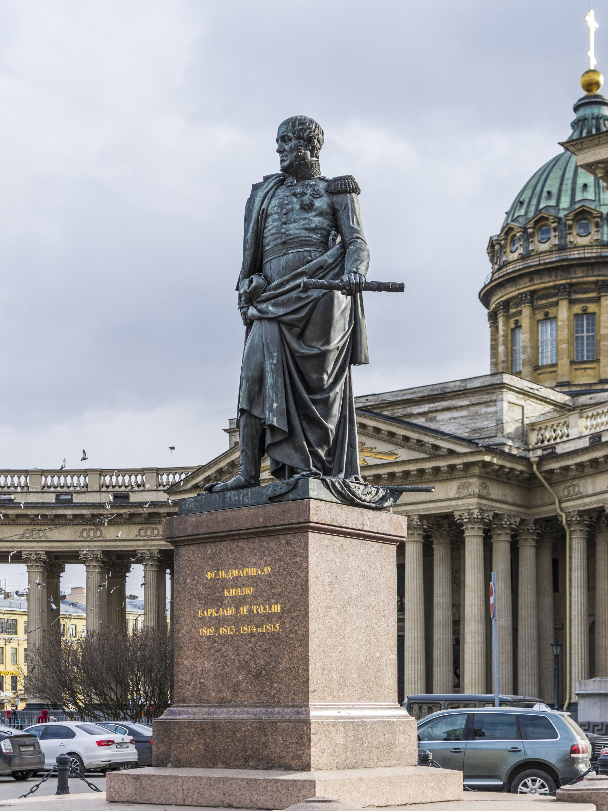
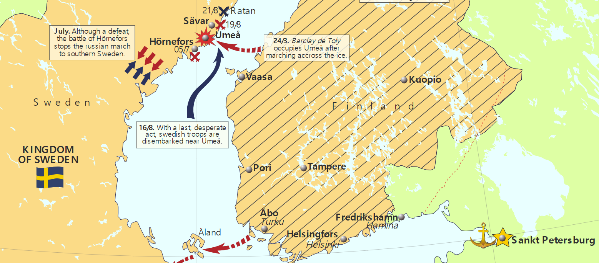

바우첸을 향하여 (11) - 달갑지 않은 지원군
게시: 2023-02-20T06:30:46+09:00
콜랭쿠르가 나폴레옹과 말 위에서 이야기를 나눈 뒤 먼저 말을 달려 향한 곳은 바우첸의 연합군 진지였습니다. 콜랭쿠르는 5월 19일 밤, 바우첸 외곽의 러시아군 초소 앞에 나타나 알렉산드르와의 회담을 요청했습니다. 나폴레옹이 알렉산드르에게 보내는 사절로 콜랭쿠르를 택한 것은 매우 탁월한, 어찌 보면 당연한 선택이었습니다. 콜랭쿠르는 1812년 러시아 침공 직전까지 주러시아 프랑스 대사로 있었고 프랑스와 러시아의 평화를 위해 정말 진심으로 노력한 사람인데다, 인품 자체가 훌륭하여 알렉산드르도 개인적으로 호감을 가진 인물이었기 때문이었습니다. 그런 콜랭쿠르가 나폴레옹의 별로 진정성 없는 메시지, 즉 '무의미한 피와 폭력을 종식시키기 위해 휴전하고 평화 협정을 논의하자'는 이야기를 개인적인 진심을 담아 전달했지만, 알렉산드르는 현명하게도 즉답을 피했습니다. 알렉산드르는 다음날 아침 프로이센 국왕을 포함한 연합군 회의에서 이 일을 논의했는데, 프로이센 측은 펄쩍 뛰며 그런 거짓 제안에 속지 말고 분연히 싸워야 한다고 강력히 주장했습니다. 알렉산드르는 조금 다른 측면에서 역시 싸워야 한다고 생각했습니다. 그 오만한 나폴레옹이 이렇게 겸손하게 평화 조약 협의을 먼저 청했다는 것은 나폴레옹의 사정이 그만큼 좋지 않다는 반증으로 본 것이었습니다. 결론은 평화 협정 거절과 바우첸에서의 결전이었습니다. 그러나 알렉산드르는 결과적으로 나폴레옹에게 보기 좋게 속아 말려들어간 셈이 되었습니다. 나폴레옹이 마음에도 없는 평화 조약 협의를 요청한 것은 2가지 이유에서였습니다. 일단 오스트리아의 중재 시도를 단칼에 무력화시키면서도 그 책임을 알렉산드르에게 떠넘기기 위함이었고, 두번째 이유는 연합군이 바우첸에서 후퇴하지 않고 결전을 벌이도록 유도하기 위함이었습니다. 드레스덴에서 나폴레옹은 곳곳에 편지를 보내 '러시아와 프로이센이 작센 일대의 마을들을 불태우며 후퇴하고 있다, 저들은 작년에 러시아에서 벌였던 초토화 작전을 작센에서 벌이고 있다'라며 연합군의 후퇴 작전을 비난했습니다. 실제로 작년처럼 러시아군이 슐레지엔을 거쳐 폴란드, 그리고 그 너머 러시아 안쪽으로 또 후퇴해버린다면 이 전쟁은 끝을 볼 수가 없었습니다. 나폴레옹은 여기 바우첸에서 결판을 내기를 원했습니다. 원래부터 비트겐슈타인은 바우첸에서 싸울 예정이긴 했지만, 실은 그 세부적인 작전안에 있어서는 상당히 갈팡질팡하고 있었습니다. 이미 언급한 것처럼, 연합군이 어디로 후퇴했는지 파악하기 위해 막도날의 제11 군단은 지나치게 앞서 전진한 바 있었고, 베르트랑의 제4 군단 및 마르몽의 제6 군단을 양 옆에 끼고도 전체 러시아군과 프로이센군이 결집한 연합군에 비해서는 크게 열세인 상태로 바우첸 앞에 진을 치고 있었습니다. 이건 매우 위태로운 상태였습니다. 분산된 적을 집결된 아군으로 공격하는 것은 병법의 기본이었으니까요. 그러나 비트겐슈타인은 이 기회를 이용하여 선제공격에 나서려고 하다가 다시 마음을 바꿔 최초 의도대로 방어전에 충실하기로 하는 등 흔들리고 있었습니다. 당대 사람들의 평가에 따르면 비트겐슈타인은 능력과 인품에 비해 단호함이 좀 아쉬운 편이라고 했는데, 그런 그의 성격도 이런 혼란에 기여했습니다. 연합군은 바우첸에 도착한 이후 거의 1주일 동안 이렇게 오락가락 하는 지휘부 때문에 아무 것도 하지 않고 있다 보니, 사기도 좀 떨어지고 불안해지기 시작했습니다. 그나이제나우를 선두로 한 프로이센 측의 끊임없는 불평불만도 이 혼란에 도움이 되지는 않았지만, 정작 가장 크게 혼란을 일으킨 것은 알렉산드르 본인이었습니다. 연합군 사령부에 있던 영국 대사 스튜어트는 영국 외무상 캐슬레이에게 보내는 편지에서 이렇게 적었습니다.
"러시아군 내부에서 짜르와 그 총사령관(비트겐슈타인) 사이의 명령 체계 확립에 좀 어려움이 있어 보입니다. 짜르는 아예 자신이 직접 지휘를 하거나, 아니면 깔끔하게 맡겨두고 물러서는 것 둘 중 하나를 해야 합니다. 현재로서는 짜르와 프로이센 국왕이 총사령관의 명령 체계를 어지럽히고 있는데, 제 눈에도 그게 확연히 보입니다. 비트겐슈타인은 그가 총사령관직에 오르면서 기대했던 것처럼 당당하게 명령을 내리지 못하고 있는데, 러시아군 내에 그의 권위에 도전하는 세력이 막강한데다 자신보다 군 내에서의 서열이 더 높은 장군들이 많기 때문입니다." 그런데 이렇게 흔들리는 비트겐슈타인의 리더쉽에 결정타를 가하는 사건이 벌어졌습니다. 전에 언급한 것처럼, 토룬 요새를 함락시킨 뒤 이쪽으로 달려오고 있던 바클레이 드 톨리(Barclay de Tolly)가 5월 16일 저녁 드디어 1만3천의 병력을 이끌고 바우첸 연합군 진지에 도착한 것입니다. 지원군이 왔으니 좋은 일이었지만 문제는 그 지휘관이 바로 작년 전체 러시아군의 총사령관으로서 보로디노 전투 직전까지 끊임없는 후퇴를 주도했던 바클레이로서, 그 누구보다 선임이라는 점이었습니다. 무엇보다, 보로디노 전투에서 비트겐슈타인은 바로 바클레이의 직속 부하로서 그의 지휘를 받은 바 있었습니다. 당시 러시아군의 전통에 있어서, 상관이 옛 직속 부하의 지휘를 받아 전투를 벌인다는 것은 상상하기 어려운 일이었습니다.

(상트 페체르부르그에 있는 바클레이 드 톨리의 동상입니다. 그는 발트 해 연안에 정착한 독일-스코틀랜드계 귀족 가문 출신이었는데, 그런 집안이 러시아 귀족으로 편입된 것은 그의 아버지 때부터였습니다. 즉 아직 러시아 귀족 사회에 뿌리를 단단히 내리지는 못했던 셈이었습니다. 나폴레옹보다 8살 연상이었던 그는 15세 때부터 군에 들어가 오스만 투르크, 스웨덴, 폴란드 반란 등 다양한 전장에서 경험을 쌓았습니다. 아일라우 전투 등 나폴레옹과의 싸움에도 참전했던 그가 가장 큰 공을 세운 것은 1809년의 핀란드 침공 작전에서였습니다. 3월 17일 5천의 병력을 이끈 그는 스웨덴과 핀란드 사이의 바다인 얼어붙은 보트니아(Bothnia) 만 100km 구간을 도보로 건너 스웨덴 본토의 우메앙(Umeå)을 점령했습니다. 알렉산드르는 이 공적을 높이 평가하여 그를 핀란드 총독으로 삼았습니다. 그는 불행히도 종전 이후 건강이 나빠져 1818년 독일 방문 중 56세의 이른 나이로 사망했습니다.)

(바클레이 인생 최대의 모험이었던 얼어붙은 보트니아 만을 도보로 건넌 사건을 보여주는 지도입니다. 말이 쉽지 얼어붙은 바다 위 100km를 걷는 것은 정말 위험하고도 힘든 일이었을 것입니다. 그 3~4일 동안 아무런 불도 못 피웠을 테니 먹는 것에 있어서나 추위에 있어서나 고생이 막심했을 것이고, 아무 지형지물이 없는 바다 위니까 정확한 방향을 찾는 것도 어려웠을 것입니다.) 바클레이가 도착하자 연합군 수뇌부의 분위기가 어수선해졌습니다. 스튜어트는 또 캐슬레이에게 보내는 편지에서 '바클레이의 도착은 매우 심각한 일로서 러시아군 내에서 당파 싸움이 일어난다고 해도 전혀 놀랍지 않다'라고 적었습니다. 프로이센군은 틀림없이 바클레이가 비트겐슈타인을 밀어내고 총사령관이 될 것인데 그럴 경우 작년처럼 러시아군은 또 저 깊숙한 후방으로 끝없이 후퇴할 것이라고 걱정했습니다. 무엇보다 비트겐슈타인 본인이 바클레이가 도착한 것에 대해 나름 짜증이 나서 알렉산드르에게 사임서를 제출했습니다. 최악의 사태는 바로 알렉산드르 본인이 만들었습니다. '총사령관직에서 물러나, 바클레이 밑에서 기쁘게 복무하겠다'라며 제출한 사직서에 대해 알렉산드르는 무슨 생각에서인지 아무런 지시나 언질을 주지 않았던 것입니다. 원래 군사작전에 이러쿵저러쿵 참견하기 좋아했던 알렉산드르는 마침 이렇게 대체 누가 총사령관인지 모호하게 된 것이 어쩌면 자신의 영향력을 더 확대하면서도 혹시 패전하더라도 그 책임은 명목상의 총사령관에게 떠넘길 수 있게 되었다고 생각한 것일 수도 있었습니다. 결과적으로 연합군 내의 불확실성은 더욱 커졌고 혼란이 가중되었습니다. 러시아군과 프로이센군이 이렇게 불필요한 혼란에 빠져든 사이, 프랑스군은 그 나름대로 혼란 속으로 치닫고 있었습니다. 바로 네의 진격 방향의 문제였습니다. Source : The Life of Napoleon Bonaparte, by William Milligan Sloane Napoleon and the Struggle for Germany, by Leggiere, Michael V
https://en.wikipedia.org/wiki/Michael_Andreas_Barclay_de_Tolly https://en.wikipedia.org/wiki/Finnish_War